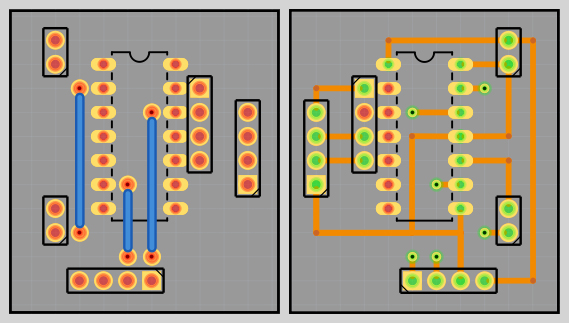
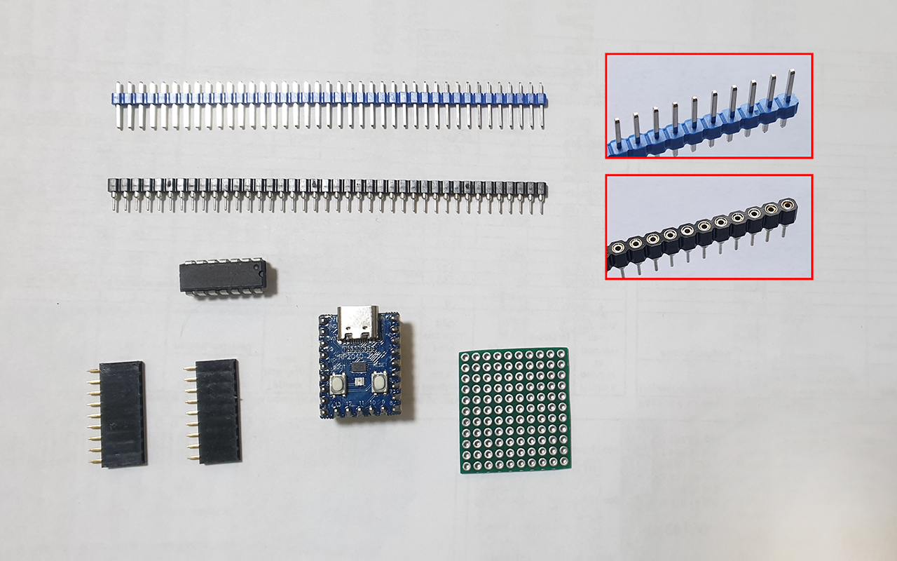
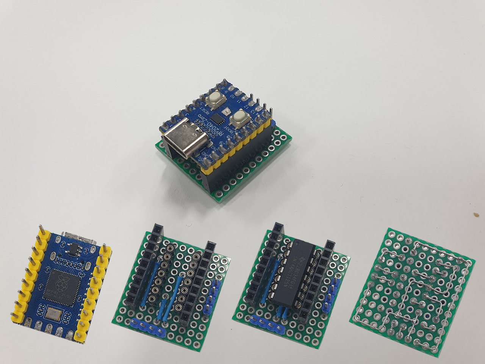
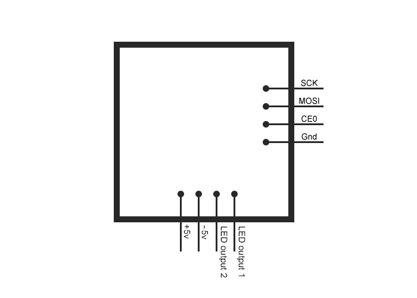

In the software "Fritzing" I made a connection diagram of the elements on the board.
You can download the source file of this scheme from my repository on GitHub
(link).

To solder all the elements on the breadboard, you need a regular electric soldering iron and one of the flux varieties (ordinary rosin is also suitable) to remove the oxide film during the soldering process, reduce surface tension and improve the spreading of liquid solder.
For more convenient soldering, I made a special "tubular" tip from the tip already available on the soldering iron (900M series), according to the following video instructions (link). All elements are on our table and we are ready for further assembly.

The result is such a compact printed circuit board with pre-prepared elements installed on it.
 
The blue block at the bottom of the board is intended for two Data lines connected to the LED strip (this assembly option uses parallel multi-segment mode) and connecting 5 V from the power supply for power level shifter and the Rp2040-Zero board itself. The blue block located on the right side of the board is intended for connection to Raspberry Pi (SPI bridge).
| Rp2040 | - | Raspberry |
|---|---|---|
| GPIO 2 | SCK | GPIO 11 |
| GPIO 4 | MOSI | GPIO 10 |
| GPIO 5 | CE0 | GPIO 8 |
| GND | GND | GND |
This completes this stage of preparing the LED driver.